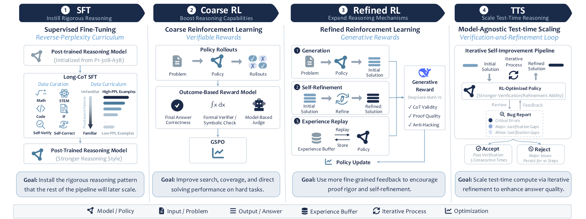
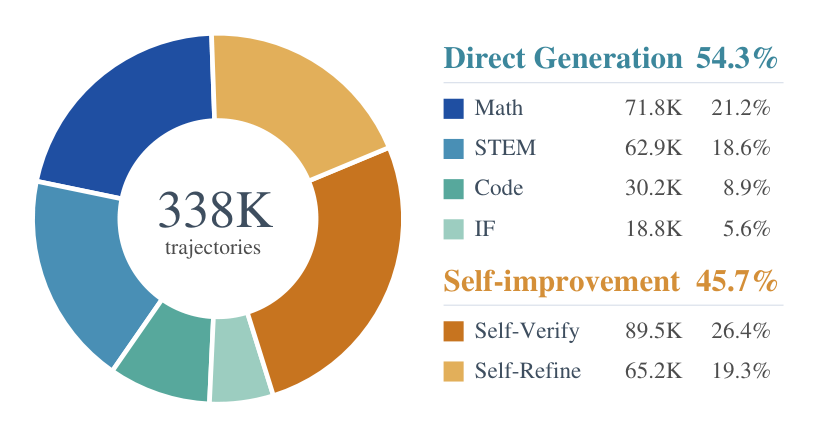
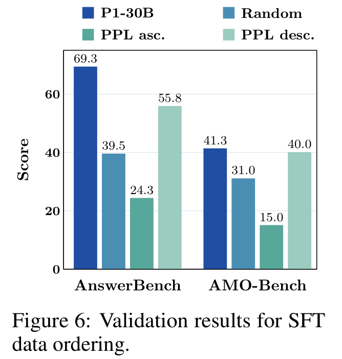
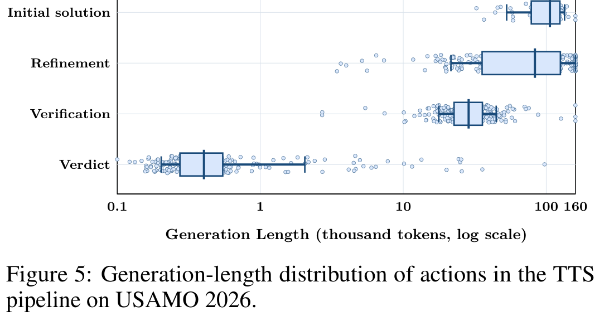
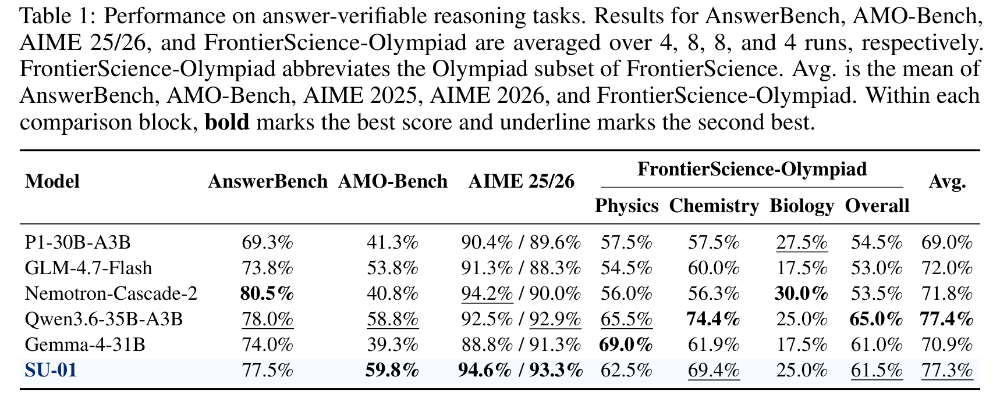
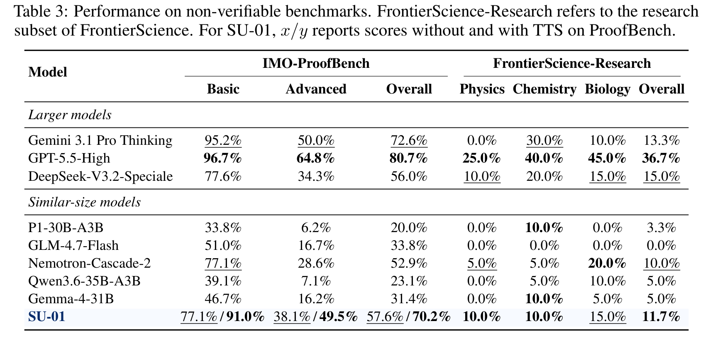
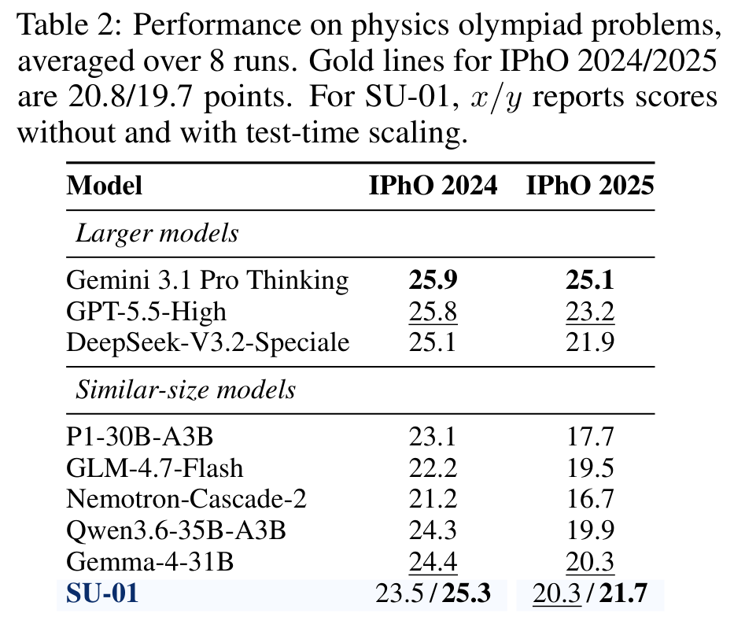
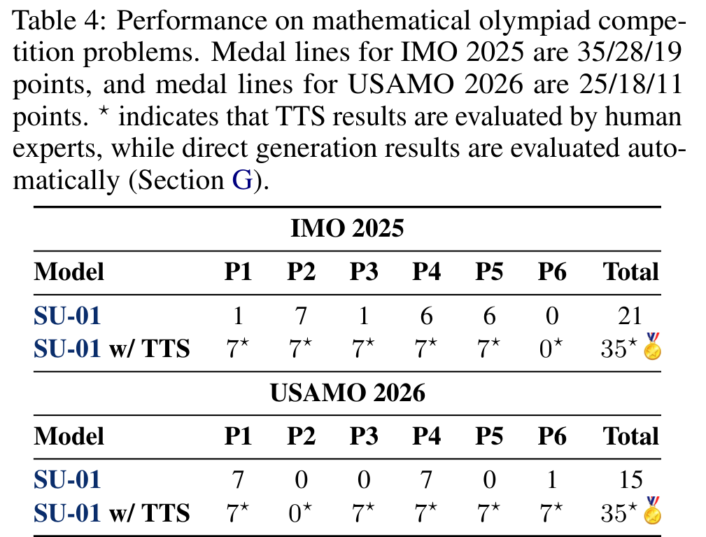
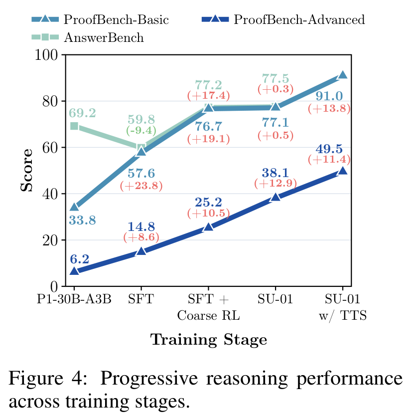
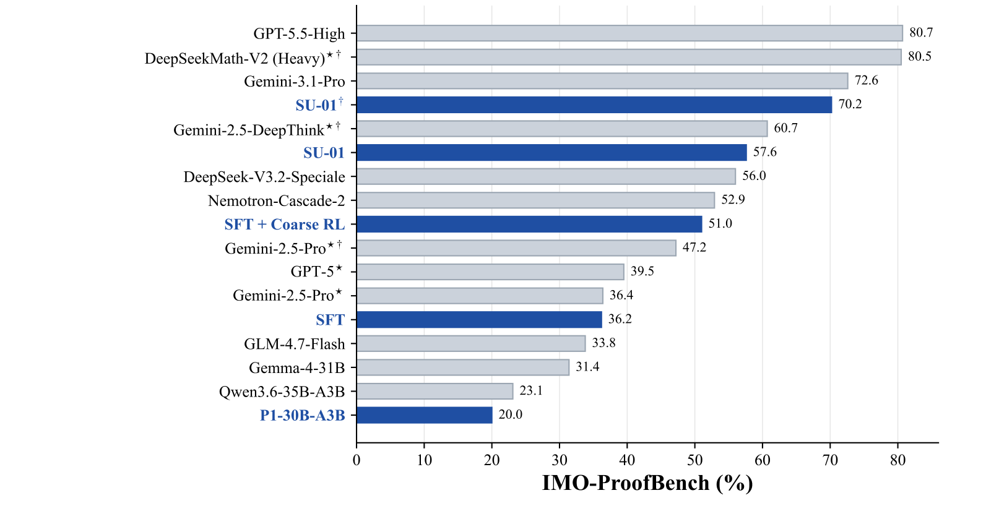

2026-05-13
《Achieving Gold-Medal-Level Olympiad Reasoning via Simple and Unified Scaling》中文阅读报告
从 reverse-perplexity curriculum SFT 到 RLVR、proof-level RL，再到 solve-verify-refine test-time scaling 的统一 post-training recipe。
1. 基本信息
- 论文：Achieving Gold-Medal-Level Olympiad Reasoning via Simple and Unified Scaling
- arXiv：2605.13301v1
- 日期：2026-05-13 提交
- 作者：Yafu Li、Runzhe Zhan、Haoran Zhang、Shunkai Zhang、Yizhuo Li 等 28 位作者
- 机构：上海人工智能实验室、香港中文大学、清华大学、上海交通大学、北京大学
- 链接：
- 论文：https://arxiv.org/abs/2605.13301
- PDF：https://arxiv.org/pdf/2605.13301
- 项目页：https://simplified-reasoning.github.io/SU-01/
- 代码：https://github.com/Simplified-Reasoning/SU-01
- 模型：https://huggingface.co/Simplified-Reasoning/SU-01
- 主题关键词：奥赛推理、长程证明、SFT、RLVR、GSPO、proof reward、experience replay、test-time scaling、self-verification
2. 一句话总结
这篇技术报告提出了一个相对统一的 post-training recipe：从一个 30B-A3B reasoning backbone 出发，先用 reverse-perplexity curriculum SFT 建立 rigorous proof-search 行为，再用“RLVR + proof-level RL”增强 problem-solving 和 proof quality，最后通过 solve-verify-refine 式的 test-time scaling，把 SU-01 推到 IMO、USAMO、IPhO 的金牌线附近或之上。
更短地说：它不是重新发明一个专用奥赛 solver，而是尝试证明“一个 generalist reasoning model 经过合适的 behavior shaping、reward training 和 inference-time verification/refinement loop，可以被 specialized 成强 proof solver”。
3. 背景与问题
奥赛题和普通数学 benchmark 的核心差别在于：最终答案正确远远不够，解法必须能经受严格评分。模型需要：
- 搜索多个可能路线，而不是沿第一个局部模式走到底。
- 精确控制假设、边界条件、分类讨论和中间引理。
- 发现 proof gaps，并能做 targeted repair。
- 把 solving process 组织成可审阅的 full proof。
论文关注的问题是：能否用一个简单、统一、跨数学与科学任务的后训练流程，把一个已有的推理 backbone 推到奥赛级别，而不依赖专门符号系统、外部代码执行或特定题型 solver？
作者给出的答案是 SU-01。它以 P1-30B-A3B 为初始模型，通过三段 training 和一段 test-time scaling 来实现：
- SFT：让模型学会 long-form proof、self-checking 和 repair。
- Coarse RL：用 verifiable rewards 增强 answer-seeking / problem-solving ability。
- Refined RL：用 proof-level reward、self-refinement 和 replay 增强 proof reliability。
- TTS：在 inference time 反复 solve、verify、refine，直到 candidate proof 稳定通过。
4. 方法总览
图：SU-01 训练与推理流水线
内容：展示 SU-01 从 SFT、Coarse RL、Refined RL 到 TTS 的完整 training/inference pipeline，是理解全文方法结构的总览图。

这张图是全文的骨架。它把 SU-01 拆成四个阶段：SFT、Coarse RL、Refined RL、TTS。读图时要注意两个主线：
- 训练目标从
behavior shaping逐步转向verifiable problem solving和proof quality。 - 推理目标从
single-pass generation转向solve-verify-refine-accept的 proof workflow。
论文的核心不是某一个复杂模块，而是阶段之间的配合：
| 阶段 | 输入/机制 | 主要目标 | 关键风险 |
|---|---|---|---|
| SFT | 338K long-form trajectories、reverse-PPL ordering | 安装 proof-search、self-checking、repair 行为 | 过拟合长输出、损伤原模型能力 |
| Coarse RL | 8,967 个 verifiable prompts、binary rewards、GSPO | 恢复并增强 answer-seeking ability | reward 只看 final answer，可能奖励 brittle reasoning |
| Refined RL | proof reward、self-refinement prompts、experience replay | 强化 proof quality | judge 噪声、reward hacking、成本高 |
| TTS | solve-verify-refine loop | 把 test-time compute 投入最难题 | 成本巨大，和 single-pass decoding 不完全可比 |
5. SFT：先把模型“写证明”的行为改造出来
5.1 为什么先做 SFT
作者选择 P1-30B-A3B 作为初始模型，因为它已经有数学、物理和科学推理能力。但论文指出，这类 post-trained model 即使能做出一些答案，也未必天然组织出 rigorous proof。因此 SFT 在这里不是为了从零教数学，而是为了改变 reasoning behavior：
- 从 short answer 转向 long-form proof search。
- 从直接求值转向“提出方案、self-check、repair proof gaps”。
- 保留原模型的 general scientific competence。
这个设计很重要。论文的隐含假设是：对已有强模型做 behavior adaptation，比从 base model 重新训练 olympiad reasoning 更经济。
5.2 SFT 数据构成
图：SFT 数据组成
内容：展示 338K 条 SFT trajectories 中 direct generation、self-verification 和 self-refinement 数据的占比，说明作者并不只训练解题，还显式训练 checking / repair 行为。

SFT 过滤后共有 338K 条 trajectories，且 response length 小于 8,192 tokens。数据分成两大类：
| 类别 | 数量 | 占比 | 作用 |
|---|---|---|---|
| Math | 71.8K | 21.2% | 奥赛数学与证明能力 |
| STEM | 62.9K | 18.6% | 科学推理迁移 |
| Code | 30.2K | 8.9% | 结构化推理与程序式分解 |
| Instruction Following | 18.8K | 5.6% | 保持通用指令跟随 |
| Self-Verify | 89.5K | 26.4% | 学会 self-check proof |
| Self-Refine | 65.2K | 19.3% | 学会 repair flawed proof |
direct generation 类占 54.3%，self-improvement 类占 45.7%。这个比例反映出论文的一个判断：olympiad-level reasoning 不是只靠“会解题”，还要训练模型理解什么叫 proof gap，以及如何 refine / repair proof。
5.3 Reverse-Perplexity Curriculum
SFT 的关键小技巧是 reverse-perplexity curriculum。对每条 SFT 样本 (x_i, y_i)，作者用 initial policy pi_0 计算 length-normalized perplexity：
PPL(x_i, y_i) = exp( - 1/T_i * sum_t log pi_0(y_i,t | x_i, y_i,<t) )然后每个 epoch 内按 PPL 从高到低训练。高 PPL 表示 teacher trajectory 和当前模型习惯最不匹配，通常包含更陌生的 proof-search / repair patterns。作者的解释是：先冲击模型最缺的行为，再用更熟悉的样本巩固。
图：逆困惑度排序效果
内容：比较 random、PPL ascending、PPL descending 三种 SFT data ordering；PPL descending 在 AnswerBench、AMO-Bench 和 truncation rate 上更稳定。

验证结果支持这个选择：
| SFT 排序 | AnswerBench | AMO-Bench | 截断率表现 |
|---|---|---|---|
| Random | 39.5 | 31.0 | 7.3% / 8.0% |
| PPL ascending | 24.3 | 15.0 | 最差 |
| PPL descending | 55.8 | 40.0 | 0.3% / 0.0% |
这里最有价值的不是分数本身，而是 truncation rate 这个 diagnostic signal。作者认为，如果模型尚未适应 long-CoT proof，它容易重复、绕圈、迟迟不收束，导致输出被截断。PPL descending 能显著降低 truncation rate，说明它不仅提高了 benchmark 分数，也改善了 long reasoning stability。
6. RL：从“会写证明”推进到“能解难题且证明可靠”
6.1 RL 数据
RL 使用独立于 SFT 的 prompt pool。最终包括：
- verifiable set：8,967 个 prompts。
- non-verifiable / proof-oriented set：16,287 个 prompts。
作者先去重、去污染，再通过 rejection sampling 去掉对当前策略过易或过难的问题。这个过滤很实际：RL 需要有梯度信号，太容易的问题没有学习价值，太难的问题又会让奖励长期为零。
6.2 Coarse RL：先用 verifiable rewards 拉高解题能力
Coarse RL 只用 verifiable prompts，形式是 RLVR，即 reinforcement learning with verifiable rewards。每个 prompt 采样一组 candidate solutions，final answer 被 verifier 转成 binary reward：
r(q, o)=1：答案正确。r(q, o)=0：答案错误。
reward pipeline 是分层的：
- 提取最终答案，做规范化文本匹配。
- 无法解决的样本交给 Math-Verify 做 expression-level check。
- 仍无法解决的样本交给 gpt-oss-120b 做 generative verification。
优化算法使用 GSPO，即 Group Sequence Policy Optimization。相比 token-level GRPO，GSPO 的奖励分配和 clip 都在完整 response 级别，更契合“整段解答最终对不对”的 outcome reward。
论文给出的 GSPO 思路可以简化理解为：
- 同一个问题采样多个 responses。
- 用 group mean reward 做 baseline。
- 对整段回答计算 sequence-level importance ratio。
- 用 clipped surrogate 控制策略更新幅度。
作者还冻结 MoE router，减少 replay 或 off-policy trajectories 造成的 routing instability。
6.3 Refined RL：把目标从 answer correctness 换成 proof correctness
Coarse RL 的问题是：final answer correct 不等于 proof rigorous。奥赛评分会惩罚 hidden gaps、incomplete case analysis、unjustified transformations 和 conclusion jumps。Refined RL 因此加入三个机制。
第一，generative proof reward。数学 prompt 使用 DeepSeekMath-V2 作为 proof-level reward model，读取完整题目和完整解答，输出 binary proof-quality reward。它不只看 boxed answer，而是判断 reasoning path 是否 valid、complete、rigorous。论文也承认这种 reward 更贵、更容易受 judge artifact 影响，因此加入 anti-hack preprocessing，过滤格式泄漏、不平衡 thinking delimiter、严重重复等异常输出。
第二，self-refinement。若一个 query group 的平均 proof reward 低于 tau_ref = 0.5，failed responses 会被转成 refinement prompts：包含原题、错误解，要求模型 critique argument、fix proof errors、fill missing justifications，并输出 complete final solution。训练中 self-refinement 数据目标比例是 eta_ref = 0.2。
第三，experience replay。难题上偶尔出现的 successful proof trajectory 很珍贵，直接丢掉会浪费信号。作者把“当前 group 里成功轨迹数量很少”的 query 加入 replay buffer，之后以受控比例 replay successful trajectories。Refined RL 的 replay ratio 是 rho = 0.25。如果同题有多个 successful trajectories，则选 lowest-entropy trajectory，理由是低熵更可能代表稳定可复现的 proof path。
这三者的组合逻辑是：
- proof reward 告诉模型“proof 是否 valid / complete”。
- self-refinement 训练模型“如何从 flawed solution refine 到 corrected proof”。
- replay 保留 hard problems 上的 rare successful trajectories，避免一次成功样本被训练过程冲掉。
7. TTS：把推理变成 solve-verify-refine loop
TTS 是 test-time scaling。论文特别强调，这不是简单 best-of-N sampling。对奥赛题来说，一堆 candidate solutions 里选一个仍可能选到有 hidden gaps 的 proof。因此 SU-01 使用 solve-verify-refine loop：
- solver prompt 生成 initial solution。
- verifier prompt 检查 full solution，输出 structured bug report。
- verdict step 决定 accept、reject 或继续 refine。
- refinement prompt 基于 bug report refine 解法。
- 重复直到 candidate solution 连续通过 verification，或耗尽 budget。
推理配置很重：
- 单次 generation max length 为 160K tokens。
- 每题最多 10 个 independent runs。
- 每个 run 最多 30 轮探索。
- 连续 5 次 verification true 后接受。
- 连续 10 次 verification false 可提前终止。
图：TTS 各动作长度分布
内容：展示 USAMO 2026 上 initial solution、refinement、verification 和 verdict 的 generation length 分布，说明主要 compute budget 花在 proof construction 和 repair 上。

USAMO 2026 TTS traces 的长度分布说明 compute 主要花在 proof construction 和 refinement 上：
| TTS 动作 | 中位长度 |
|---|---|
| Initial solution | 106K tokens |
| Refinement | 83K tokens |
| Verification | 28.7K tokens |
| verdict | 404 tokens |
这说明 SU-01 的强结果高度依赖 long context 与大 inference budget。论文的积极解读是：模型能够在 draft、critique 和 refinement context 中持续保持超过 100K tokens 的 coherent reasoning。需要谨慎的地方是：这类结果不应和 single-pass short decoding 直接等价比较。
8. 实验设计与结果
8.1 Benchmark 分类
论文把评测分成三类：
| 类别 | Benchmark | 测什么 |
|---|---|---|
| Answer-verifiable | AnswerBench、AMO-Bench、AIME 2025/2026、FrontierScience-Olympiad | final answer correctness 与 verifiable problem solving |
| Proof-oriented / non-verifiable | IMO-ProofBench、FrontierScience-Research | full reasoning trace 与 proof quality |
| 官方竞赛题 | IMO 2025、USAMO 2026、IPhO 2024/2025 | 竞赛式端到端表现 |
8.2 Answer-Verifiable 任务
图：Answer-Verifiable Tasks 结果
内容：汇总 AnswerBench、AMO-Bench、AIME 和 FrontierScience-Olympiad 的结果，用来判断 SU-01 是否保留 answer-level problem-solving ability。

SU-01 在 answer-verifiable tasks 上的平均分是 77.3%，几乎追平同规模最强 baseline Qwen3.6-35B-A3B 的 77.4%。更细看：
- AMO-Bench：SU-01 59.8%，同规模最好。
- AIME 2025/2026：94.6% / 93.3%，同规模最好。
- AnswerBench：77.5%，略低于 Nemotron-Cascade-2 80.5% 和 Qwen3.6 78.0%。
- FrontierScience-Olympiad overall：61.5%，低于 Qwen3.6 的 65.0%，但仍显示跨科学任务迁移。
我的判断：answer-verifiable tasks 证明 SU-01 没有因 proof-oriented training 而丢掉 answer ability，但它的优势不主要在普通 answer matching，而是在更接近 contest-style 和 proof-style 的任务上。
8.3 Proof-Oriented 与 Non-Verifiable 任务
图：Proof-Oriented / Non-Verifiable Tasks 结果
内容：对比 IMO-ProofBench 和 FrontierScience-Research，突出 SU-01 在 proof-oriented tasks 上的优势以及与更大模型之间的差距。

IMO-ProofBench 是全文最关键的 benchmark。PDF v1 中 SU-01 的结果是：
| 模型/设置 | Basic | Advanced | Overall |
|---|---|---|---|
| P1-30B-A3B | 33.8% | 6.2% | 20.0% |
| Nemotron-Cascade-2 | 77.1% | 28.6% | 52.9% |
| SU-01 direct | 77.1% | 38.1% | 57.6% |
| SU-01 w/ TTS | 91.0% | 49.5% | 70.2% |
| GPT-5.5-High | 96.7% | 64.8% | 80.7% |
结论比较清楚：
- 同规模里，SU-01 direct 已经是 proof-oriented tasks 最强之一。
- TTS 对 proof benchmark 的提升很大，尤其 Basic 从 77.1% 到 91.0%，Advanced 从 38.1% 到 49.5%。
- 但和 GPT-5.5-High 这种更大或更强推理设置相比，仍有明显差距。
FrontierScience-Research 上，SU-01 overall 是 11.7%，是 PDF 表中同规模最好，但绝对分数仍低。这个结果支持“科学推理有迁移”，但不能过度解读为研究级科学推理已经很强。
8.4 物理奥赛与数学奥赛
图：IPhO 结果
内容：展示 SU-01 在 IPhO 2024/2025 上的 direct 和 TTS 分数，用来支撑其物理奥赛能力和科学推理迁移。

IPhO 2024/2025 的金牌线分别是 20.8 和 19.7。SU-01：
- direct：23.5 / 20.3，已经超过两年金牌线。
- TTS：25.3 / 21.7，进一步提升。
物理结果的意义是：虽然 refined RL 的关键机制主要围绕 mathematical proof 和 proof reward，模型并没有退化成纯数学竞赛器，仍能在物理奥赛上维持较强 reasoning。
图：IMO 与 USAMO 竞赛结果
内容：展示 SU-01 在 IMO 2025 和 USAMO 2026 各题上的得分；direct 是铜牌线水平，TTS 后达到或超过金牌线。

IMO 2025 和 USAMO 2026 是论文标题里“gold-medal-level”的主要证据：
| 比赛 | direct | w/ TTS | 金/银/铜线 |
|---|---|---|---|
| IMO 2025 | 21 | 35 | 35 / 28 / 19 |
| USAMO 2026 | 15 | 35 | 25 / 18 / 11 |
需要分开解读：
- direct SU-01 在两场数学奥赛上是铜牌线水平。
- TTS 后达到 IMO 2025 金牌线，并超过 USAMO 2026 金牌线 10 分。
- 12 道 IMO/USAMO 题中，TTS 后 10 道满分，失败在 IMO 2025 P6 和 USAMO 2026 P2。
论文的 case study 认为模型擅长把问题形式化为刚性框架，例如几何坐标化/复数化、数论同余分类、函数方程递推、数字问题的自动机式 DP。失败模式则集中在需要精细保持组合结构或全局过程不变量的题目上。
8.5 分阶段增长证据
图：训练阶段性能变化
内容：展示 P1、SFT、Coarse RL、Refined RL、TTS 逐阶段对 AnswerBench 和 ProofBench 的影响，是验证 pipeline 分工的关键证据。

Figure 4 是论文最有解释力的分析图。它说明每个阶段确实在做不同的事：
| 阶段 | AnswerBench | ProofBench Basic | ProofBench Advanced | 解读 |
|---|---|---|---|---|
| P1-30B-A3B | 69.2 | 33.8 | 6.2 | 原模型会做答案，但 proof quality 弱 |
| SFT | 59.8 | 57.6 | 14.8 | 牺牲 short-answer ability，换来 proof behavior |
| SFT + Coarse RL | 77.2 | 76.7 | 25.2 | RLVR 恢复并增强 problem solving |
| SU-01 | 77.5 | 77.1 | 38.1 | Refined RL 主要改善 hard proof problems |
| SU-01 w/ TTS | - | 91.0 | 49.5 | inference-time refinement 继续提升 proof quality |
这支持作者的阶段划分：SFT 做 behavior shaping，Coarse RL 拉 answer-seeking ability，Refined RL 对 advanced proof 更有效，TTS 则把训练出的 self-verification / self-refinement ability 在 inference time 放大。
8.6 与整体排行榜的关系
图：IMO-ProofBench 总览
内容：横向比较 SU-01 与多个同规模和更大模型在 IMO-ProofBench 上的表现，同时展示 SU-01 pipeline 的逐步提升。

Figure 1 把 SU-01 放到 IMO-ProofBench 横向比较中。蓝色条展示从 P1-30B-A3B 到 SFT、Coarse RL、SU-01、SU-01 w/ TTS 的增长。最核心的观察是：
- backbone：20.0%
- SFT：36.2%
- SFT + Coarse RL：51.0%
- SU-01 direct：57.6%
- SU-01 w/ TTS：70.2%
这条曲线比单个最终分数更重要，因为它证明结果不是 single prompt trick，而是 staged training 逐步叠加的效果。
9. 相关论文脉络
- AlphaGeometry / AlphaProof / AlphaGeometry 2：代表 symbolic / neuro-symbolic olympiad solving 路线，强调 search 与 formal systems。SU-01 不走专用 symbolic system，而是 natural-language reasoning 加 self-verification。
- DeepSeekMath / Qwen-Math / DeepSeek-R1：代表 mathematical reasoning post-training 和 RLVR 的基础脉络。SU-01 继承了“verifiable rewards 能提升 reasoning”的路线，但把目标推进到 proof quality。
- GSPO：为 MoE reasoning model 提供 sequence-level policy optimization。SU-01 的 coarse RL 和 replay 设计都建立在 GSPO 接口上。
- ExGRPO / experience replay for reasoning：提供“保存 rare successful trajectories”的思想。SU-01 在 refined RL 中使用更简单的 replay，不使用原 ExGRPO 的 reward shaping。
- DeepSeekMath-V2：作为 proof reward 的关键依赖之一，提供 proof-level judging。
- Huang & Yang 的 verification-and-refinement pipeline：SU-01 的 TTS 基本沿着 solve、verify、refine、accept 的范式展开。
- Nemotron-Cascade-2：同规模 MoE 强 baseline，代表更复杂多阶段 post-training recipe。SU-01 的卖点是用较简洁统一的配方达到接近或超过同规模表现。
10. 论文的主要价值
第一，阶段设计清晰。论文没有只报告最终模型，而是给出从 SFT 到 RL 到 TTS 的分阶段性能变化，使方法论更可分析。
第二，把 proof quality 显式纳入训练。很多 RLVR 只看 final answer，SU-01 的 refined RL 明确试图优化 proof validity，这更接近奥赛评分目标。
第三，强调 self-verification 和 self-refinement 的一致性。SFT 数据里有 self-verify/self-refine，Refined RL 里有 self-refinement，TTS 里也用 solve-verify-refine。这种 train-inference alignment 是设计亮点。
第四，展示 compact MoE 的潜力。30B-A3B 不是小模型，但相对 frontier dense 或更大系统，仍算紧凑。论文展示了在足够长上下文和 TTS 下，compact model 可以达到很强的竞赛表现。
第五，跨科学迁移有一定证据。IPhO 和 FrontierScience 的结果说明，数学证明式训练并没有完全牺牲科学推理能力。
11. 局限、风险与未回答问题
11.1 TTS 成本非常高
数学奥赛金牌结果主要来自 TTS，而不是 direct generation。每题最多 10 runs、每 run 最多 30 轮、单次 generation 可到 160K tokens。这个预算远大于普通模型评测。因此“gold-medal-level”应理解为“在 large test-time compute 和 self-verification loop 下达到金牌线”，不是“single-pass answer 稳定达到金牌线”。
11.2 Proof reward 与评测 judge 都可能引入模型偏差
Refined RL 依赖 DeepSeekMath-V2 作为 proof reward。ProofBench 使用 Gemini-2.5-Pro 评分，FrontierScience-R 使用 GPT-5-high judge，最终 IMO/USAMO TTS 结果由人类专家评审。多种 judge 并用是现实可行的，但也让结果带有评估协议依赖。尤其 proof reward 若存在系统性偏差，训练可能学到 reward model 偏好。
11.3 refined RL 组件缺少完全拆解
Figure 4 说明 refined RL 整体对 ProofBench Advanced 有明显收益，但论文没有充分隔离 proof reward、self-refinement、experience replay 三者各自的边际贡献。读者能相信 refined RL 阶段有效，但很难判断哪个子机制最关键。
11.4 训练数据复现仍有门槛
论文披露了数据来源、规模和 filtering logic，GitHub 也发布了训练代码。但完整复现还需要 prompt pool、cleaning rules、teacher generation、reward server、long-context inference serving 和大量 GPU。对一般研究者来说，比较现实的复现目标是评测 released model 或复现较小规模 pipeline，而不是完整训练 SU-01。
11.5 科学研究泛化还不充分
FrontierScience-Research overall 只有 11.7%，虽然同规模里较强，但绝对能力有限。论文关于“research-level scientific reasoning”的表述应谨慎理解：它显示了迁移趋势，不等于已经具备可靠研究级自动推理能力。
11.6 污染与公开题库风险仍需关注
作者提到去污染和去重，但奥赛、AoPS、公开训练书、社区题库高度公开，且模型生态里相关数据可能多次流转。最终是否完全避免 benchmark leakage，需要更细的 data audit 才能判断。
12. 复现与落地建议
如果目标是复现论文结果，优先级建议如下：
- 先复现 evaluation，不急着训练。使用 Hugging Face 模型和 GitHub 的
su01-eval，先跑 direct decoding，再跑少量 TTS。 - 先选小 benchmark。AIME、AMO-Bench 或少量 ProofBench 子集更适合作为 smoke test；IMO/USAMO TTS 成本高。
- 记录 inference budget。必须同时报告 max tokens、runs、exploration rounds、verification rounds，否则 TTS 分数不可比。
- 若要复现训练，先做 SFT ablation。reverse-PPL ordering、training epochs、truncation rate 是最容易验证的局部环节。
- refined RL 复现应先替代 reward model 做小规模实验。可以先用一个稳定 judge 或人工小样本标签验证 proof reward 是否可靠。
- 对业务落地而言，SU-01 更适合高价值、低吞吐、可等待的数学/科学证明任务，不适合低延迟问答。
具体工程依赖：
- 训练框架：slime。
- 推理服务：SGLang，部分 baseline 使用 vLLM。
- 训练规模：SFT 8 GPUs；RL 64 GPUs；RL 总 200 steps。
- 长上下文：training 和 inference 都需要非常长的 response budget。
- 评测：answer-verifiable tasks 用 rule-based verification + Math-Verify + model-based judging；proof tasks 需 benchmark 官方 judge 或人工专家。
13. 术语表
| 术语 | 中文解释 |
|---|---|
| SFT | supervised fine-tuning，用 teacher trajectories 做 behavior shaping |
| Long-CoT | long chain-of-thought，强调长程 reasoning trajectory |
| Reverse-PPL curriculum | reverse-perplexity curriculum，先训练模型最不熟悉的 high-PPL samples |
| RLVR | reinforcement learning with verifiable rewards，用 verifiable outcome 做 RL reward |
| GSPO | Group Sequence Policy Optimization，组内、序列级策略优化 |
| Proof reward | 对 full proof quality 打分的 reward，而非只看 final answer |
| Self-refinement | 让模型基于 flawed solution 和 critique refine / repair proof |
| Experience replay | 保存并 replay hard problems 上的 rare successful trajectories |
| TTS | test-time scaling，在 inference time 扩展 compute |
| Solve-verify-refine | solve、verify、refine 的循环式 inference |
| MoE | mixture of experts，混合专家模型 |
| 30B-A3B | 总参数约 30B、每 token 激活约 3B 参数的模型描述 |
15. 总体评价
这篇论文的强点在于 engineering recipe 清晰、stage evidence 比较完整，而且把 proof validity 从 evaluation metric 推进到了 training objective 和 inference workflow 中。它对做 mathematical / scientific reasoning post-training 的人有直接参考价值：不要只做 answer-level RLVR，要先做 proof behavior shaping，再用 verifiable rewards 恢复能力，再用 proof-level reward 和 self-refinement 补上 rigor，最后在 inference time 用 verification/refinement loop 放大能力。
但它也不是“30B 模型 single-pass solving 已经稳定超过人类金牌选手”的证据。更准确的结论是：在高质量 post-training、long-context infrastructure、proof-level reward、experience replay 和 large test-time compute 共同作用下，一个 compact MoE 可以在若干官方奥赛题上达到金牌线水平。这个结果很强，但成本、evaluation protocol 和 reward/judge 偏差是理解它时必须同时记住的约束。